Anchord user guideHướng dẫn sử dụng Anchord
Everything you need to run Anchord, review docs, and wire your agent into the loop. This guide is
generated from the product specs in docs/specs/. Reflects v0.
Tất cả những gì bạn cần để chạy Anchord, review tài liệu và đưa agent vào vòng lặp. Trang này
sinh ra từ spec sản phẩm trong docs/specs/, áp dụng cho v0.
Want to poke around first? Sign in to the live demo
with demo@anchord.microvn.net / correct horse battery staple — a seeded workspace with docs to annotate.
Muốn thử trước? Đăng nhập bản demo
bằng demo@anchord.microvn.net / correct horse battery staple — một workspace có sẵn tài liệu để annotate.
Self-hostingSelf-hosting
Anchord runs entirely on your own infrastructure — app, database, and storage in one Docker Compose stack. No external telemetry; the only outbound traffic is the email provider and the OAuth sign-in you choose to enable. Anchord chạy hoàn toàn trên hạ tầng của bạn: app, database và phần lưu trữ gói trong một stack Docker Compose. Không có telemetry gửi ra ngoài. Lưu lượng đi ra chỉ gồm email provider và OAuth đăng nhập mà bạn chọn bật.
Quick startKhởi động nhanh
git clone <this-repo> anchord && cd anchord
cp .env.example .env
# edit .env (see below), then:
docker compose upThat brings up PostgreSQL, waits for it to be healthy, runs migrations idempotently, and serves the app + API. On first run you sign up, and your account auto-creates a default workspace. Lệnh đó dựng PostgreSQL, chờ nó healthy, chạy migration theo kiểu idempotent, rồi chạy app và API. Lần đầu bạn đăng ký xong, tài khoản tự tạo một workspace mặc định.
APP_SECRET and an email provider — no silent
misconfiguration. Read the boot log if it exits.
App từ chối khởi động nếu thiếu APP_SECRET hoặc một email provider, để không cấu hình
sai một cách âm thầm. Nếu nó thoát, hãy đọc log khởi động.
Required configurationCấu hình bắt buộc
| VariableBiến | PurposeMục đích | NotesGhi chú |
|---|---|---|
| APP_SECRET | Signs sessions, share-link tokens, access tokensKý session, token share-link, access token | Any random string ≥ 16 charsChuỗi ngẫu nhiên ≥ 16 ký tự |
| APP_URL | Public base URL of your instanceURL gốc công khai của instance | Absolute http(s):// — used in email + share deep-linksURL tuyệt đối http(s)://, dùng trong email và deep-link chia sẻ |
| DATABASE_URL | PostgreSQL connection stringChuỗi kết nối PostgreSQL | postgresql://user:pass@db:5432/anchord |
| POSTGRES_USER / _PASSWORD / _DB | Database credentialsThông tin database | Operator-set — no default password shipsNgười vận hành tự đặt, không kèm mật khẩu mặc định |
| SMTP_HOST / _PORT / _USER / _PASS | Email via SMTPEmail qua SMTP | One email provider required…Cần ít nhất một email provider... |
| RESEND_API_KEY | Email via Resend HTTP APIEmail qua Resend HTTP API | …or use Resend instead of SMTP...hoặc dùng Resend thay cho SMTP |
Optional: APP_PORT (host port, default 3000), ASSETS_DIR (image storage path),
CORS_ORIGIN. Email verification and magic-link sign-in both need the email provider.
Tùy chọn: APP_PORT (port trên host, mặc định 3000), ASSETS_DIR (đường dẫn lưu ảnh),
CORS_ORIGIN. Xác minh email và đăng nhập magic-link đều cần email provider.
BackupSao lưu
State lives in two places — back up both: a PostgreSQL dump (text + metadata) and the
anchord_assets volume (image/binary uploads). Both persist across container restarts.
Dữ liệu nằm ở hai nơi, sao lưu cả hai: một bản dump PostgreSQL (văn bản và metadata) và
volume anchord_assets (file ảnh và nhị phân). Cả hai đều giữ nguyên qua các lần restart container.
Sign in & accountsĐăng nhập & tài khoản
How you log in is separate from what you can do — authentication is independent of the roles and sharing covered later. Which methods appear depends on what your operator enabled. Cách bạn đăng nhập tách biệt với những gì bạn làm được: xác thực độc lập với vai trò và chia sẻ ở phần sau. Bạn thấy những phương thức nào là tùy người vận hành đã bật cái gì.
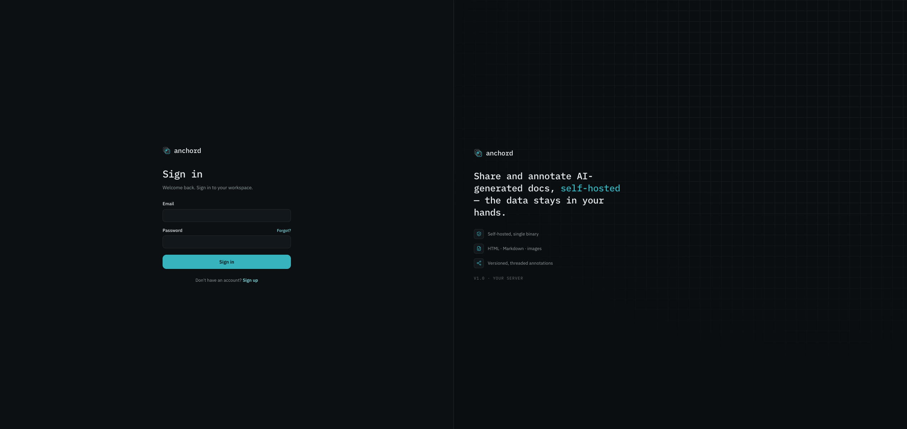
Sign-in methodsPhương thức đăng nhập
- Email + password — sign up with an email and a password (min 8 chars), verify via the link sent to your inbox. Repeated wrong passwords are rate-limited. Email + mật khẩu: đăng ký bằng email và mật khẩu (tối thiểu 8 ký tự), rồi xác minh qua link gửi vào hộp thư. Nhập sai mật khẩu nhiều lần sẽ bị giới hạn tốc độ.
- Magic link — passwordless sign-in via an email link. Magic link: đăng nhập không cần mật khẩu, qua một link gửi vào email.
- GitHub / Google OAuth — if enabled, one click; first time creates an account with the email pre-verified. GitHub / Google OAuth: nếu được bật, chỉ một click. Lần đầu sẽ tạo tài khoản với email đã xác minh sẵn.
Account linkingLiên kết tài khoản
Sign in with a different method using the same verified email and both link to one account — no duplicates. Linking only happens on verified emails, to prevent takeover. Đăng nhập bằng một phương thức khác với cùng email đã xác minh thì cả hai cùng trỏ về một tài khoản, không tạo bản trùng. Việc liên kết chỉ xảy ra với email đã xác minh, để chống chiếm tài khoản.
Your accountTài khoản của bạn
Open Settings from the avatar menu (top-right):Mở Settings từ menu avatar (góc trên phải):
- Account — display name (1–80 chars), email, sign-in provider, verification status, join date. Sign out here.Account: tên hiển thị (1–80 ký tự), email, nhà cung cấp đăng nhập, trạng thái xác minh, ngày tham gia. Đăng xuất cũng ở đây.
- Appearance — Dark (canonical default) or Light. Saved per device.Appearance: Tối (mặc định) hoặc Sáng. Lưu riêng theo từng thiết bị.
- Developer — create & revoke MCP personal access tokens (see MCP integration).Developer: tạo và thu hồi personal access token cho MCP (xem Tích hợp MCP).
- Notifications — per-event in-app/email toggles (see Notifications).Notifications: bật/tắt thông báo trong app và email theo từng sự kiện (xem Thông báo).
Workspaces & membersWorkspace & thành viên
Anchord is multi-workspace. Each account auto-creates its own default workspace on signup (you = owner/admin). Create more, get invited into others, and switch between them — each workspace's projects, docs, and members are fully isolated. Anchord hỗ trợ nhiều workspace. Mỗi tài khoản tự tạo một workspace mặc định khi đăng ký (bạn là owner/admin). Bạn có thể tạo thêm, được mời vào workspace khác và chuyển qua lại. Project, tài liệu và thành viên của mỗi workspace tách biệt hoàn toàn.
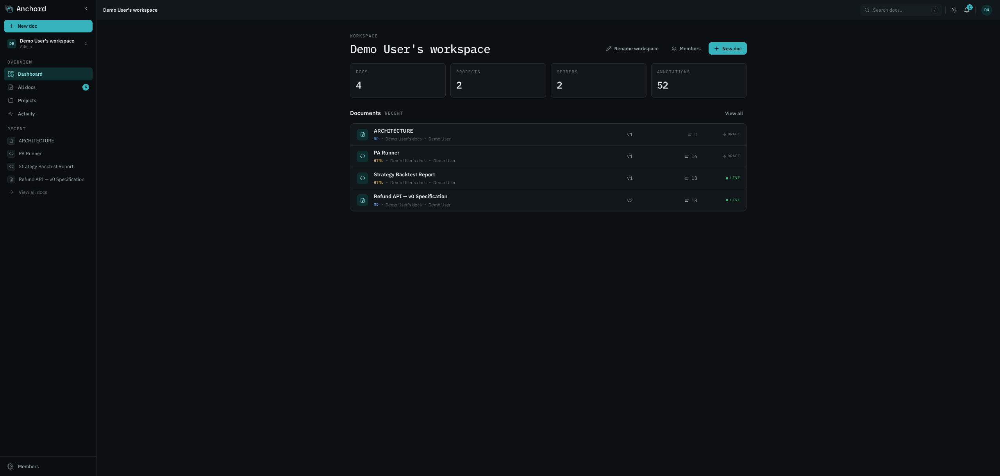
Workspace rolesVai trò workspace
| ActionHành động | Admin | Member |
|---|---|---|
| Create projects & docsTạo project & tài liệu | ✓ | ✓ |
| Invite membersMời thành viên | ✓ | — |
| Remove membersXóa thành viên | ✓ | — |
| Change member rolesĐổi vai trò thành viên | ✓ | — |
| Rename the workspaceĐổi tên workspace | ✓ | — |
| See the member listXem danh sách thành viên | ✓ | — |
Inviting membersMời thành viên
Admins invite by email. The invitee opens the accept/reject link — no need to be logged in first: Admin mời qua email. Người được mời mở link để chấp nhận hoặc từ chối, không cần đăng nhập trước:
- Signed in, matching email → joins immediately.Đang đăng nhập, email khớp → vào workspace ngay.
- Has an account → sign in, then accept.Đã có tài khoản → đăng nhập rồi chấp nhận.
- No account → create one inline (name + password ≥ 8) and accept in one step — the invite delivery already proved email ownership, so no separate verification. Chưa có tài khoản → tạo ngay tại chỗ (tên và mật khẩu ≥ 8) rồi chấp nhận trong một bước. Việc gửi được lời mời đã chứng minh quyền sở hữu email nên không cần xác minh thêm.
Expired or revoked invites return a neutral "not found" (the system never reveals whether an invite existed). Removing a member revokes access immediately; their owned docs stay in the workspace. Lời mời hết hạn hoặc bị thu hồi sẽ trả về "not found" trung tính (hệ thống không tiết lộ lời mời đó có từng tồn tại hay không). Xóa thành viên thu hồi quyền ngay lập tức, nhưng tài liệu họ sở hữu vẫn ở lại workspace.
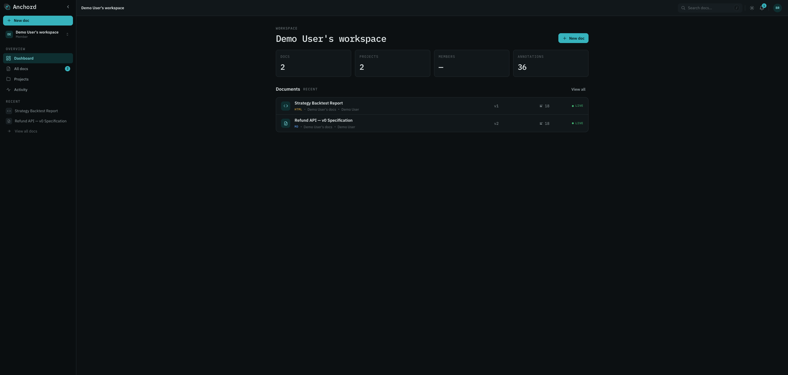
Projects & visibilityProject & hiển thị
Projects group related docs inside a workspace. Every doc belongs to a project; every workspace has a default project where quick-publishes land. Project gom các tài liệu liên quan trong một workspace. Mỗi tài liệu thuộc về một project, và mỗi workspace có một project mặc định, nơi nhận các bản đăng nhanh.
Private vs public projectsProject riêng tư vs công khai
| ProjectProject | Who sees it in listsAi thấy trong danh sách | New-doc default accessQuyền mặc định tài liệu mới |
|---|---|---|
| Your default projectProject mặc định của bạn | Only you (private shell)Chỉ bạn (vỏ riêng tư) | Workspace-shared — colleagues can view + commentChia sẻ workspace: đồng nghiệp xem và comment |
| Public projectProject công khai | Everyone in the workspaceMọi người trong workspace | Workspace-shared (commenter)Chia sẻ workspace (commenter) |
| Private project (non-default)Project riêng tư (không mặc định) | Only the ownerChỉ chủ sở hữu | Restricted — private to you + inviteesHạn chế: chỉ bạn và người được mời |
The central rule: you see a project if you own it OR it's public. Workspace admins get no exception — they never see another member's private project. Private-project names are suppressed for non-owners everywhere (cards, breadcrumbs, activity). Quy tắc cốt lõi: bạn thấy một project nếu bạn sở hữu HOẶC nó công khai. Admin workspace cũng không ngoại lệ, không bao giờ thấy project riêng tư của thành viên khác. Tên project riêng tư bị ẩn với người ngoài ở mọi nơi (card, breadcrumb, activity).
Creating & togglingTạo & chuyển đổi
New user-created projects are public by default; tick "private" at creation or toggle later. Toggling visibility affects new docs only — existing docs keep their access, except public→private offers an optional cascade to make all existing docs private too. Project do bạn tạo mới sẽ công khai theo mặc định; tích "private" lúc tạo hoặc đổi lại sau. Đổi chế độ hiển thị chỉ ảnh hưởng tài liệu mới, tài liệu cũ giữ nguyên quyền. Riêng khi chuyển công khai sang riêng tư, bạn có tùy chọn cascade để biến tất cả tài liệu cũ thành riêng tư luôn.
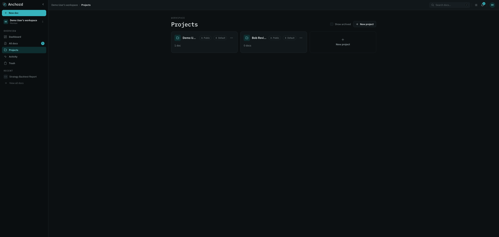
Browse & searchDuyệt & tìm kiếm
All docs lists every doc you can access across projects, sortable by created / updated / project, paginated (20/page, up to 100). Search matches titles, doc content, and comment bodies — but only ever returns docs you can access; restricted content never leaks via snippets. All docs liệt kê mọi tài liệu bạn truy cập được trên khắp các project, sắp theo ngày tạo, ngày cập nhật hoặc project, có phân trang (20/trang, tối đa 100). Tìm kiếm khớp tiêu đề, nội dung và bình luận, nhưng chỉ trả về tài liệu bạn truy cập được; nội dung hạn chế không bao giờ lộ qua trích đoạn.
Publishing docsĐăng tài liệu
A doc is the unit you share for review. It has an immutable slug, a mutable title, a kind (Markdown / HTML / Image), and a version history. Publish by uploading a file, pasting content, or via MCP. Một doc là đơn vị bạn chia sẻ để review. Nó có slug bất biến, tiêu đề đổi được, một loại (Markdown / HTML / Image) và lịch sử version. Bạn đăng bằng cách upload file, dán nội dung, hoặc qua MCP.
The three kindsBa loại
| KindLoại | Renders asHiển thị thành | SafetyAn toàn | Use forDùng cho |
|---|---|---|---|
| Markdown | Themed prose in the appVăn bản theo theme app | Scripts strippedLoại bỏ script | Specs, plans, release notes, guidesSpec, plan, release note, hướng dẫn |
| HTML | Interactive, in a sandboxed iframeTương tác, trong iframe sandbox | Opaque-origin sandbox + strict CSP — can't reach the app sessionSandbox opaque-origin và CSP nghiêm ngặt, không chạm được session app | Dashboards, prototypes, rich toolsDashboard, prototype, công cụ phức tạp |
| Image | Zoom + pan viewerViewer zoom + kéo | SVG also sandboxedSVG cũng được sandbox | Screenshots, diagrams, designsẢnh chụp, sơ đồ, thiết kế |
Limits: HTML/Markdown ≤ 5 MB, images ≤ 25 MB. Empty or type-mismatched uploads are rejected. Title
is inferred from an HTML <title> or the first Markdown # heading, and
stays editable. The doc-kind badge is color-coded so MD / HTML / IMG read apart at a glance.
Giới hạn: HTML/Markdown ≤ 5 MB, ảnh ≤ 25 MB. File rỗng hoặc sai loại sẽ bị từ chối. Tiêu đề được suy ra
từ thẻ <title> của HTML hoặc heading # Markdown đầu tiên, và vẫn sửa được. Huy hiệu
loại tài liệu được tô màu để MD / HTML / IMG phân biệt ngay trong nháy mắt.
Versions & diffVersion & diff
Versions are immutable. Each content publish appends one (v2, v3, …); editing only the title does not. Nothing is ever deleted — restoring an old version appends a copy. Version là bất biến. Mỗi lần đăng nội dung sẽ thêm một bản mới (v2, v3, ...); còn chỉ sửa tiêu đề thì không. Không có gì bị xóa: khôi phục bản cũ thực chất là thêm một bản sao.
Version historyLịch sử version
The version button in the viewer opens the history, newest-first, each showing the number, relative time, author, and a Current badge on the latest. Older versions offer Compare and Restore. Nút version trong viewer mở lịch sử, sắp mới nhất lên trước, mỗi mục hiện số bản, thời gian tương đối, tác giả, và huy hiệu Current ở bản mới nhất. Bản cũ thì có thêm Compare và Restore.
ComparingSo sánh
- Source tab — line-by-line diff: additions in teal, removals in red strikethrough, with a change count. Always horizontally scrollable. Tab Source: diff theo từng dòng, phần thêm màu teal, phần xóa gạch ngang đỏ, kèm số thay đổi. Luôn cuộn ngang được.
- Rendered tab — the two versions side-by-side (stacked below 760px). Markdown/HTML render in sandboxes; images show side-by-side. Tab Rendered: hai bản đặt cạnh nhau (xếp dọc khi dưới 760px). Markdown/HTML render trong sandbox, còn ảnh thì hiện song song.
Pick any two versions from the diff header. Default: from = the version you clicked, to = current. Chọn hai bản bất kỳ ở đầu diff. Mặc định: from = bản bạn bấm, to = bản hiện tại.
Annotations across versions (re-anchor)Annotation qua các version (neo lại)
On every publish, existing annotations re-anchor: an exact content match moves the comment forward; a fuzzy match (block position + snippet similarity) keeps it close; no match sends it to the detached list, where you can re-pin or dismiss it. Feedback is never silently lost. Mỗi lần đăng, các annotation hiện có sẽ tự neo lại: khớp nội dung chính xác thì đưa bình luận sang bản mới; khớp fuzzy (vị trí khối cộng độ giống đoạn trích) thì giữ nó ở vị trí gần đúng; không khớp thì đẩy vào danh sách detached, nơi bạn neo lại hoặc bỏ qua. Phản hồi không bao giờ bị mất một cách âm thầm.
The viewer & annotationsViewer & annotation
The viewer is a 3-pane layout: a TOC rail (outline + scroll-spy + P-badges on specs) on the left, the rendered doc in the center (in a sandbox that keeps its own styling), and the annotations rail on the right. Viewer có bố cục 3 cột: dải TOC (mục lục, scroll-spy và P-badge cho spec) bên trái, tài liệu render ở giữa (trong sandbox giữ style riêng của nó), và dải annotation bên phải.
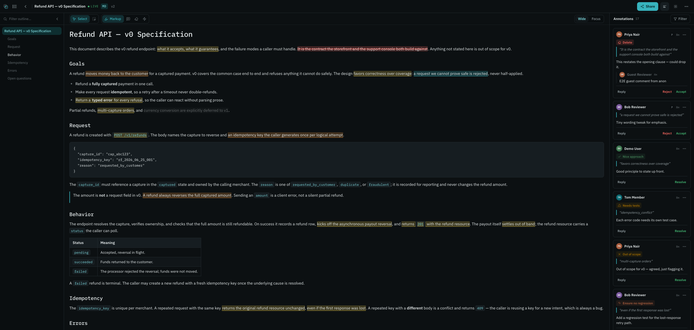
Creating an annotationTạo một annotation
- Select text (drag) — or, in Pinpoint mode, hover and click a whole block.Bôi chọn văn bản (kéo chuột), hoặc ở chế độ Pinpoint thì rê chuột rồi bấm cả một khối.
- A selection popover floats over the range with the type tools.Một popover nổi lên trên đoạn vừa bôi, kèm các công cụ chọn loại.
- Pick a type, add your comment (or pick a label), and send. The annotation anchors instantly and appears both as an inline mark and a thread card in the rail. Chọn loại, thêm bình luận (hoặc chọn label), và gửi. Annotation neo ngay và hiện vừa dưới dạng dấu inline vừa là thẻ thread trong dải.
ThreadsThread
Each annotation carries a flat thread — a root comment plus replies, with author, time, and the quoted text. Anyone with commenter+ can reply, resolve/reopen, and accept/reject redline proposals. Resolved threads dim but stay visible (history is preserved). The rail filters by type and status. Mỗi annotation là một thread phẳng gồm bình luận gốc và các trả lời, kèm tác giả, thời gian và đoạn được trích dẫn. Ai có quyền commenter trở lên đều trả lời, resolve/reopen và chấp nhận hay từ chối đề xuất redline được. Thread đã resolve thì mờ đi nhưng vẫn còn đó để giữ lịch sử. Dải bên phải lọc được theo loại và trạng thái.
Image regionsVùng ảnh
On image docs, click a point or drag a box to anchor a comment by normalized coordinates — the mark holds its position across zoom and resize. Với tài liệu ảnh, bấm một điểm hoặc kéo một khung để neo bình luận theo tọa độ chuẩn hóa; vết đánh dấu giữ nguyên chỗ dù bạn zoom hay đổi kích thước.
Guest commentingKhách comment
If the link role is commenter+, no-account guests get a random session name (renamable) and can comment — no email required. Guest comments are server-marked and can't impersonate members. Nếu vai trò link từ commenter trở lên, khách không có tài khoản vẫn comment được mà chẳng cần email: họ được cấp một tên phiên ngẫu nhiên và đổi lại được. Bình luận của khách được server đánh dấu rõ nên không thể mạo danh thành viên.
Annotation typesCác loại annotation
Each tool carries its own hue so the toolbar and the rail read by color. The type dimension is orthogonal to status (resolved = green, detached = amber, stale = muted). Mỗi công cụ mang một sắc màu riêng để thanh công cụ và dải đọc được theo màu. Chiều "loại" độc lập với trạng thái (resolved = xanh lá, detached = hổ phách, stale = mờ).
| TypeLoại | ColorMàu | What it's forDùng để | How to createCách tạo |
|---|---|---|---|
| Markup | TealTeal | The neutral parent tool — opens the type popoverCông cụ cha trung tính, dùng để mở popover chọn loại | Select text → choose a typeBôi văn bản → chọn loại |
| Comment | AmberHổ phách | A note, question, or requestGhi chú, câu hỏi, hoặc yêu cầu | Select → Comment → typeBôi → Comment → gõ |
| Redline | RedĐỏ | A delete proposal (strike-through — never edits the doc directly)Đề xuất xóa, hiện bằng gạch ngang chứ không sửa thẳng vào tài liệu | Select → RedlineBôi → Redline |
| Label | GoldVàng kim | A preset tag (e.g. "Out of scope", "Verify this")Nhãn dựng sẵn (vd "Out of scope", "Verify this") | Select → Label → pickBôi → Label → chọn |
| Like | GreenXanh lá | "Looks good" — no text needed"Ổn rồi", không cần gõ gì thêm | Select → LikeBôi → Like |
| Pinpoint | BlueXanh dương | Whole-block annotation mode (see below)Chế độ annotate cả khối (xem dưới) | Toggle Pinpoint → click a blockBật Pinpoint → bấm một khối |
Tools collapse to icon-only at rest; the active and hovered tool expand to icon + label + hue. Redlines and replace-suggestions are proposals with a status (pending / accepted / rejected / stale) — the owner decides, and an agent applies accepted changes on the next publish. Lúc rảnh, mỗi công cụ chỉ còn lại cái icon; công cụ đang chọn hoặc đang hover thì bung ra cả icon, nhãn và màu. Redline và đề xuất thay thế là những đề xuất có trạng thái (pending / accepted / rejected / stale): chủ sở hữu là người quyết, và agent sẽ áp dụng phần được chấp nhận ở lần đăng kế tiếp.
Pinpoint modeChế độ Pinpoint
Pinpoint mode annotates an entire structural block — a paragraph, heading, list item, code block, or table cell — as one unit, instead of a text fragment. Chế độ Pinpoint annotate nguyên một khối cấu trúc như một đơn vị, dù đó là đoạn văn, heading, mục danh sách, khối code hay ô bảng, thay vì chỉ một mẩu chữ nhỏ.
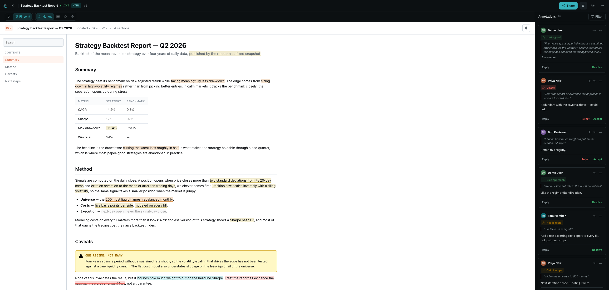
Toggle Pinpoint, hover a block (it outlines), then click to open the same type popover you'd get from a text selection. It works on Markdown blocks and HTML blocks (via iframe relay), and re-anchors across versions just like a range — hinted by the block ID and the full-block text. Bật Pinpoint, hover một khối (nó hiện viền) rồi bấm để mở đúng cái popover loại bạn vẫn thấy khi bôi văn bản. Nó dùng được cho cả khối Markdown lẫn khối HTML (qua relay iframe), và khi sang version mới cũng neo lại như một đoạn, dựa vào block ID và toàn bộ chữ trong khối.
Hover & thread cardsHover & thẻ thread
Read a thread without leaving the doc: hover a mark for a quick peek, or click it to pin the full thread card right where the annotation sits. Đọc một thread mà không cần rời tài liệu: hover lên một vết đánh dấu để xem nhanh, hoặc bấm vào nó để ghim cả thẻ thread ngay tại chỗ annotation nằm.
The checkout flow returns a payment intent. Retries are capped at 5 within the idempotency window, after which the intent must be recreated.
Every error carries a typed code so clients can branch without parsing strings.
- Hover peek — rest on any mark (~200ms) for a read-only card: author, type, the quoted phrase, the root comment (clamped), and a reply count. No buttons. Hover peek: dừng chuột trên một vết đánh dấu (~200ms) để xem nhanh một thẻ chỉ-đọc gồm tác giả, loại, đoạn trích, bình luận gốc (cắt gọn) và số trả lời. Không có nút bấm.
- Click to pin — click a mark to pin the full thread card with all actions (reply, resolve, accept/reject). It closes on outside-click, Esc, re-click, or scroll-out. On mobile it opens as a bottom sheet. Bấm để ghim: bấm vào một vết đánh dấu để ghim cả thẻ thread kèm mọi hành động (trả lời, resolve, accept/reject). Thẻ đóng lại khi bạn bấm ra ngoài, nhấn Esc, bấm lại hoặc cuộn cho khuất. Trên mobile nó hiện dưới dạng bottom sheet.
Hover and click are suppressed while you're selecting text — the annotate flow takes priority. Khi bạn đang bôi văn bản thì hover và bấm tạm tắt, để nhường cho thao tác annotate.
Sharing & permissionsChia sẻ & phân quyền
This is the differentiator. Anchord uses Google-Docs-style roles on two independent axes — who in your workspace gets access, and who with the public link gets access. The two never interfere: sharing externally never demotes your team. Đây chính là điểm khác biệt. Anchord dùng vai trò kiểu Google Docs trên hai trục độc lập: một trục cho người trong workspace, một trục cho người cầm link công khai. Hai trục không đụng nhau, nên chia sẻ ra ngoài không bao giờ làm tụt quyền của nhóm bạn.
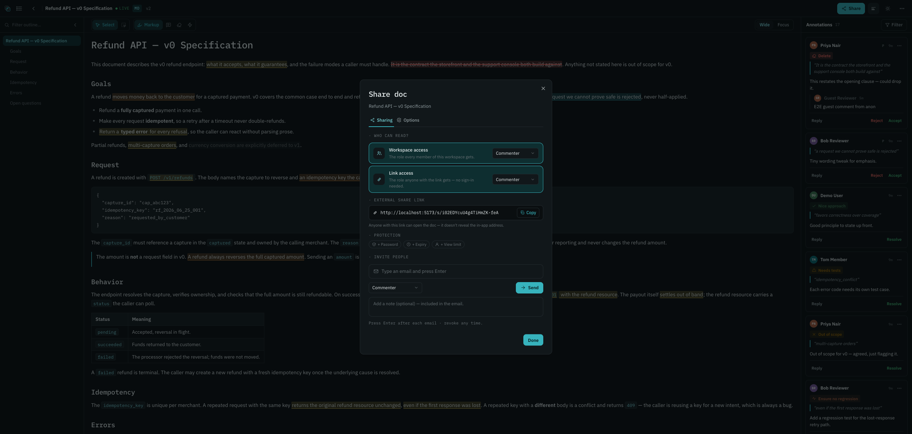
1 · Role capabilities1 · Khả năng theo vai trò
Everyone accessing a doc has one effective role. Higher role always wins across sources. Mỗi người truy cập một tài liệu có một vai trò hiệu lực. Vai trò cao luôn thắng trên các nguồn.
| CapabilityKhả năng | Viewer | Commenter | Editor | Owner |
|---|---|---|---|---|
| View the docXem tài liệu | ✓ | ✓ | ✓ | ✓ |
| Comment / reply / resolveComment / trả lời / resolve | — | ✓ | ✓ | ✓ |
| Publish new versionsĐăng version mới | — | — | ✓ | ✓ |
| Share / manage invites / link controlsShare / quản lý lời mời / kiểm soát link | — | — | ✓* | ✓ |
| Toggle "editors can share"Bật/tắt "editor được share" | — | — | — | ✓ |
| Delete the docXóa tài liệu | — | — | ✓† | ✓ |
* Only when "editors can share" is on (default). † Editors can soft-delete to Trash; permanent delete is owner/admin only.* Chỉ khi "editor được share" bật (mặc định). † Editor xóa mềm vào Trash được; xóa vĩnh viễn chỉ owner/admin.
2 · The two access axes2 · Hai trục quyền
A doc's general access is two independent settings. Each can be off, or set to viewer / commenter / editor. Quyền chung của một tài liệu là hai thiết lập độc lập. Mỗi cái có thể tắt, hoặc đặt viewer / commenter / editor.
Workspace accessQuyền workspace
The role every member of this doc's workspace gets. Off = hidden from the workspace (only owner + invitees + link-holders). Vai trò mà mọi thành viên trong workspace của tài liệu nhận. Tắt = ẩn khỏi workspace (chỉ owner + người được mời + người giữ link).
Link accessQuyền link
The role anyone with the share link gets, including no-account guests. Off = no public link at all. Vai trò mà bất kỳ ai có link chia sẻ nhận, gồm cả khách không tài khoản. Tắt = không có link công khai nào.
3 · Access combinations3 · Tổ hợp quyền
The legacy "level" (restricted / anyone-in-workspace / anyone-with-link) is just a derived read-out of the two axes — it's never stored. "Mức" kiểu cũ (restricted / anyone-in-workspace / anyone-with-link) chỉ là cách diễn giải suy ra từ hai trục, không bao giờ được lưu lại.
| WorkspaceWorkspace | Link | Derived levelMức suy ra | Who can do whatAi làm được gì |
|---|---|---|---|
| OffTắt | OffTắt | RestrictedHạn chế | Owner + individually-invited people onlyChỉ owner + người được mời riêng |
| Commenter | OffTắt | Anyone in workspaceMọi người trong workspace | Members comment; not publicThành viên comment; không công khai defaultmặc định |
| Viewer | OffTắt | Anyone in workspaceMọi người trong workspace | Members read-onlyThành viên chỉ đọc |
| Editor | OffTắt | Anyone in workspaceMọi người trong workspace | Members can publishThành viên đăng được |
| OffTắt | Viewer | Anyone with linkAi có link | Link-holders read-only (guests included)Người giữ link chỉ đọc (gồm khách) |
| OffTắt | Commenter | Anyone with linkAi có link | Link-holders + guests commentNgười giữ link + khách comment |
| Commenter | Commenter | Anyone with linkAi có link | Members comment · link-holders + guests commentThành viên comment · người giữ link + khách comment |
| Commenter | Editor | Anyone with linkAi có link | Members comment · signed-in link-holders edit · guests capped at commentThành viên comment · người giữ link đã đăng nhập edit · khách trần ở comment |
4 · Guests vs account-holders4 · Khách vs người có tài khoản
| No-account guestKhách không tài khoản | Account-holderNgười có tài khoản | |
|---|---|---|
| View (if link/workspace allows)Xem (nếu link/workspace cho phép) | ✓ | ✓ |
| Comment (if role ≥ commenter)Comment (nếu vai trò ≥ commenter) | ✓ (renamable session name)(tên phiên đổi được) | ✓ |
| Edit / publish (if role = editor)Edit / đăng (nếu vai trò = editor) | capped at commentertrần ở commenter | ✓ |
| Highest role wins across sourcesVai trò cao nhất thắng trên các nguồn | ✓ | ✓ |
5 · The share link & controls5 · Link chia sẻ & kiểm soát
When link access is on, Anchord mints an unguessable capability link like
/s/aBc1DeF2… — it contains no part of the title, so the address bar never leaks
content. Optional link controls: password, expiry, and a
view limit. Wrong passwords rate-limit after 5 tries; changing the view limit
resets the counter. Controls never gate people who already have access another way. Turning link
access off (or rotating the link) revokes old links instantly.
Khi bật quyền link, Anchord tạo một link capability không thể đoán, dạng /s/aBc1DeF2.... Link này không chứa phần nào của tiêu đề nên thanh địa chỉ không lộ nội dung. Bạn có thể thêm vài kiểm soát tùy chọn: mật khẩu, hết hạn và giới hạn lượt xem. Nhập sai mật khẩu 5 lần sẽ bị giới hạn tốc độ; đổi giới hạn lượt xem thì bộ đếm về lại 0. Các kiểm soát này không cản người vốn đã có quyền theo đường khác. Tắt quyền link (hoặc xoay link) sẽ thu hồi link cũ ngay lập tức.
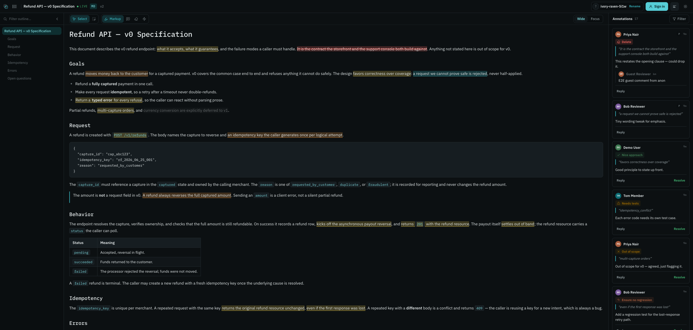
NotificationsThông báo
The bell (top-right) shows recent notifications with an unread count (up to "9+"). Clicking a row jumps to the exact annotation and marks just that one read. "Mark all read" clears the rest — opening the dropdown alone doesn't. Chuông (góc trên bên phải) hiện các thông báo gần đây kèm số chưa đọc (tối đa "9+"). Bấm vào một dòng sẽ nhảy tới đúng annotation và chỉ đánh dấu riêng dòng đó là đã đọc. Muốn dọn hết thì bấm "Mark all read"; chỉ mở dropdown ra thôi thì không tính.
Events & defaultsSự kiện & mặc định
| EventSự kiện | Who's notifiedAi được báo | In-appTrong app | |
|---|---|---|---|
| New feedbackPhản hồi mới | Doc owner + editorsOwner + editor của tài liệu | ✓ | ✓ |
| Thread activity (reply / new comment)Hoạt động thread (trả lời / comment mới) | Thread participants + ownerNgười trong thread + owner | ✓ | ✓ |
| Suggestion decidedĐề xuất được quyết | The suggestion authorTác giả đề xuất | ✓ | ✓ |
| Resolved / reopenedResolve / mở lại | The annotation creatorNgười tạo annotation | ✓ | — |
| Detached (republish orphaned your anchor)Detached (đăng lại làm mất neo) | The annotation authorTác giả annotation | locked onkhóa bật | — |
| Document shared with youTài liệu được chia sẻ cho bạn | YouBạn | ✓ | — |
| Workspace inviteLời mời workspace | You (if you have an account)Bạn (nếu có tài khoản) | ✓ | — |
| Member joinedThành viên tham gia | Workspace adminsAdmin workspace | ✓ | off (opt-in)tắt (tự bật) |
| Removed from workspaceBị xóa khỏi workspace | YouBạn | locked onkhóa bật | ✓ |
| Workspace renamedWorkspace đổi tên | All membersMọi thành viên | ✓ | — |
Emails are plain text with a deep-link to the exact annotation and no doc body (privacy). Two notifications are locked on in-app — detached and removed from workspace — though you can still mute the latter's email. Email gửi đi là văn bản thuần, có deep-link tới đúng annotation và không kèm nội dung tài liệu để giữ riêng tư. Có hai thông báo luôn bật trong app là detached và bị xóa khỏi workspace; riêng email của cái sau thì bạn vẫn tắt được.
PreferencesTùy chỉnh
In Settings → Notifications, toggle in-app and email per event type, or flip the master email switch off to silence all email while keeping the bell. Trong Settings → Notifications, bật/tắt trong-app và email theo từng loại sự kiện, hoặc tắt công tắc email tổng để im mọi email mà vẫn giữ chuông.
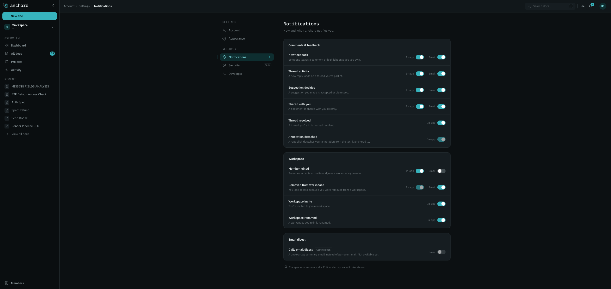
Your activityHoạt động của bạn
Your personal, cross-workspace page — everything aimed at you and everything you've done, in one place. Trang cá nhân xuyên workspace của bạn — mọi thứ hướng tới bạn và mọi việc bạn đã làm, gom về một chỗ.
The Your activity page has two tabs:Trang Your activity có hai tab:
- For you — your bell, full-page, across all workspaces, grouped by day. Reply, resolve, or accept/decline a workspace invite inline. Already-handled invites degrade to "no longer available" instead of breaking. For you: chính là cái chuông của bạn ở dạng toàn trang, gộp mọi workspace và nhóm theo ngày. Bạn trả lời, resolve hay chấp nhận/từ chối lời mời workspace ngay tại đây. Lời mời nào xử lý rồi thì chuyển thành "không còn khả dụng" thay vì báo lỗi.
- Your actions — a read-only feed of what you did (published, commented, resolved, shared, invited), verb-first with action detail. If you've since lost access to a doc, the row stays but its title/link are hidden. Your actions: feed chỉ-đọc ghi lại những gì bạn đã làm (đăng, comment, resolve, chia sẻ, mời), viết theo lối động từ trước kèm chi tiết. Nếu sau này bạn mất quyền với một tài liệu, dòng đó vẫn còn nhưng tiêu đề và link bị ẩn đi.
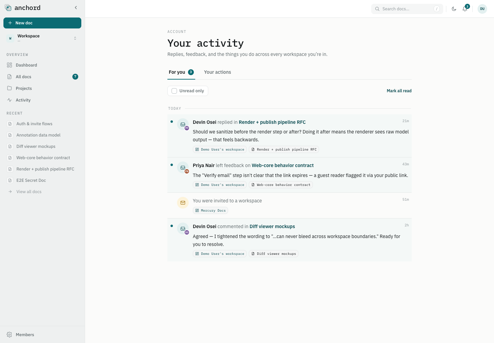
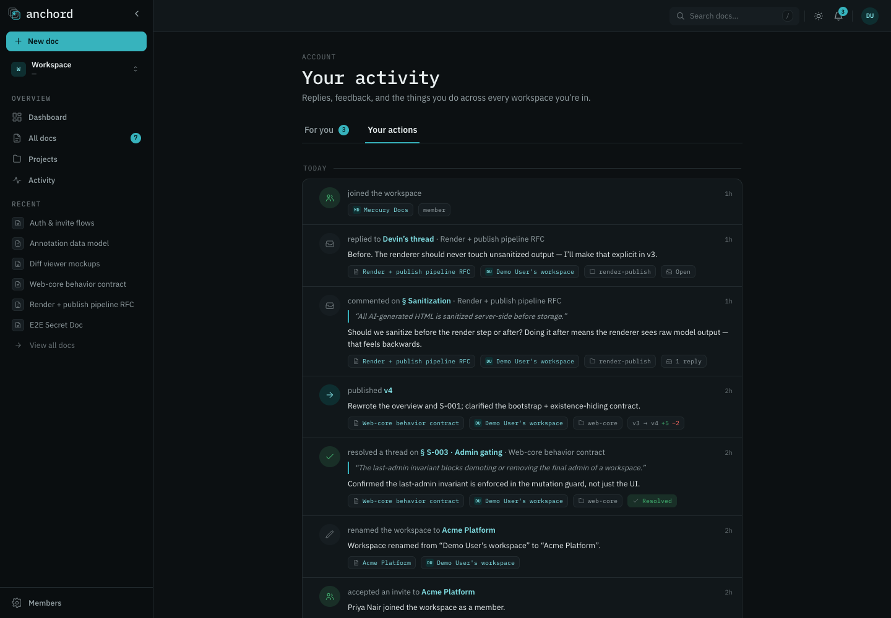
Workspace activityHoạt động workspace
Every workspace has its own append-only activity log — a shared timeline of everything happening across its projects and docs. Open it from Activity in the sidebar. Mỗi workspace có một nhật ký hoạt động chỉ-ghi-thêm của riêng nó — một dòng thời gian chung cho mọi việc diễn ra trên các project và tài liệu. Mở từ mục Activity ở sidebar.
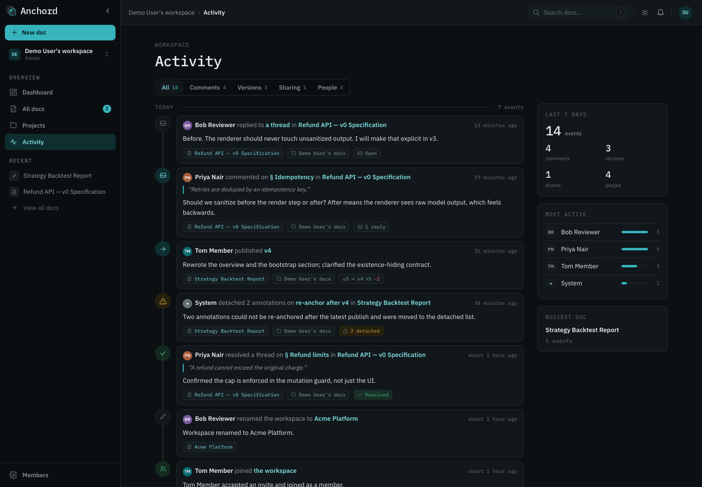
What's logged, by categoryGhi lại những gì, theo nhóm
Events are grouped by day, newest first, and filterable by category (each shows a count): Sự kiện gom theo ngày, mới nhất trước, lọc được theo nhóm (mỗi nhóm có số đếm):
| FilterBộ lọc | Events it coversSự kiện bao gồm |
|---|---|
| AllTất cả | Every event belowMọi sự kiện bên dưới |
| Comments | New annotations, replies, resolves/reopens, guest feedback from public linksAnnotation mới, trả lời, resolve/mở lại, phản hồi của khách từ link công khai |
| Versions | Version publishes and restoresĐăng và khôi phục version |
| Sharing | Access / role changes, doc deletes & restoresĐổi quyền / vai trò, xóa & khôi phục tài liệu |
| People | Member joins & removals, project created, workspace renamedThành viên vào & bị xóa, tạo project, đổi tên workspace |
Detail & statsChi tiết & thống kê
Click any event for a detail page with its metadata, the full thread or diff, and related events on that doc — plus an Open doc link that jumps to the exact annotation. A stats rail summarizes the last 7 days: total events, the most active contributors, and the busiest doc. Bấm vào một sự kiện để mở trang chi tiết kèm metadata, nguyên thread hoặc diff, và các sự kiện liên quan trên tài liệu đó — cùng một link Open doc nhảy thẳng tới đúng annotation. Dải thống kê tổng hợp 7 ngày gần nhất: tổng số sự kiện, người đóng góp nhiều nhất và tài liệu sôi động nhất.
Delete & TrashXóa & Trash
Deleting a doc is a soft-delete to Trash — all versions, annotations, and comments are preserved for restore. There's no separate archive. Xóa một tài liệu chỉ là xóa mềm vào Trash: mọi version, annotation và bình luận vẫn được giữ để khôi phục. Không có kho lưu trữ (archive) riêng.
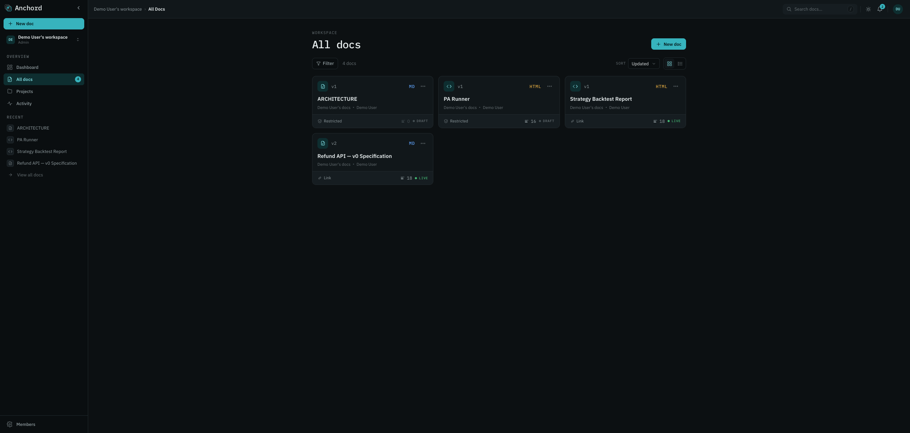
Who can do whatAi làm được gì
| ActionHành động | Owner | Editor | Workspace adminAdmin workspace |
|---|---|---|---|
| Soft-delete to TrashXóa mềm vào Trash | ✓ | ✓ | ✓ |
| Restore from TrashKhôi phục từ Trash | ✓ | ✓ | ✓ |
| Delete foreverXóa vĩnh viễn | ✓ | — | ✓ |
A deleted doc leaves grids, search, counts, and its link (people who had access see a "deleted"
notice + restore; others get a neutral not-found). Both doc_deleted and
doc_restored are logged to workspace activity.
Tài liệu đã xóa biến khỏi lưới, tìm kiếm, bộ đếm, và link (người từng có quyền thấy thông báo "đã xóa"
+ khôi phục; người khác nhận not-found trung tính). Cả doc_deleted và doc_restored
được ghi vào hoạt động workspace.
RestoringKhôi phục
From the Trash page, click Restore — the doc returns to its original project (or your default project if that's gone). Restore comes back private (both axes cleared, capability token rotated) — re-share if you want it public again. Delete and restore are both idempotent. Vào trang Trash rồi bấm Restore, tài liệu sẽ về lại project cũ (hoặc về project mặc định của bạn nếu project cũ không còn). Khi khôi phục, tài liệu trở lại trạng thái riêng tư (cả hai trục bị xóa, token capability được xoay mới), nên muốn công khai lại thì bạn share lần nữa. Cả xóa lẫn khôi phục đều idempotent.
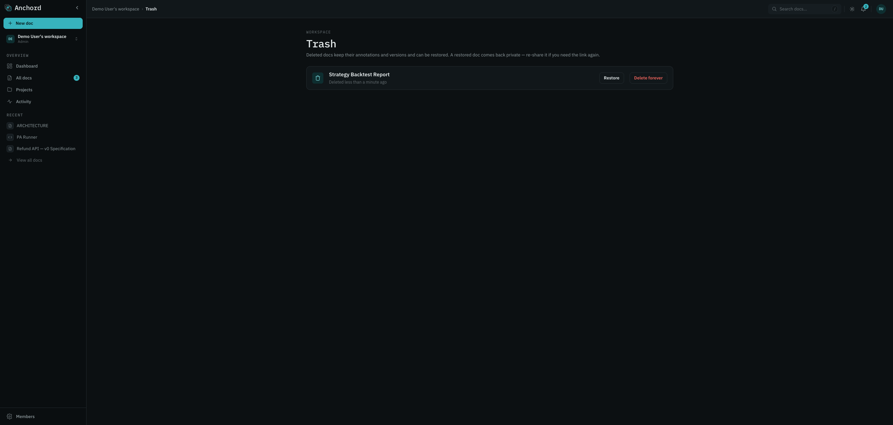
MCP integrationTích hợp MCP
A built-in MCP server (same process as the backend) lets agents — Claude, Cursor, Codex — publish docs, patch blocks, pull human feedback, and close the loop. This is the automated half of the round-trip. Một MCP server tích hợp sẵn (chạy chung tiến trình với backend) cho phép các agent như Claude, Cursor, Codex đăng tài liệu, patch từng khối, kéo phản hồi của con người về và khép vòng. Đây là nửa tự động của vòng khứ hồi.
AuthenticateXác thực
Create a workspace-scoped personal access token in Settings →
Developer (shown once). The MCP endpoint is Streamable HTTP at /mcp — the
token carries its workspace, so the path is the same for everyone:
Tạo một personal access token gắn theo workspace trong Settings → Developer (chỉ hiện một lần). Endpoint MCP là Streamable HTTP ở /mcp; token đã mang sẵn workspace nên đường dẫn giống nhau với mọi người:
claude mcp add --transport http \
--header "Authorization: Bearer anch_pat_<your_token>" \
https://<your-anchord-instance>/mcpA token bound to one workspace can never touch another — strict cross-tenant isolation. Tokens carry granular scopes (docs / annotations / projects × read / write) and revoke immediately. Token gắn với workspace nào thì chỉ tác động trong workspace đó, cách ly chéo tenant rất chặt. Mỗi token mang scope chi tiết (docs / annotations / projects × read / write) và thu hồi được ngay.
ToolsCông cụ
| ToolCông cụ | PurposeMục đích | Key inputs → returnsInput chính → trả về |
|---|---|---|
| create_document | Publish a new docĐăng tài liệu mới | content, format, title?, projectId? → docId, slug, url, version |
| update_document | Replace whole-doc contentThay toàn bộ nội dung | docId, content → version |
| patch_document | Edit specific blocks (token-cheap)Sửa từng khối (ít token) | docId, expectedVersion, edits[] → version |
| read_document | Read content + block IDsĐọc nội dung + block ID | idOrSlug → version, content, blocks[] |
| list_documents / search_documents | List / search accessible docsLiệt kê / tìm tài liệu truy cập được | query?, page?, limit? → items[], pagination |
| pull_annotations | Fetch feedback (incremental)Lấy phản hồi (tăng dần) | docId, cursor?, status?, type? → annotations[], cursor |
| reply_comment / resolve_comment | Close the loopKhép vòng | commentId|annotationId, body? |
| list / create / read_project | Organize docsSắp xếp tài liệu | name | projectId |
| delete / restore_document | Soft-delete & restoreXóa mềm & khôi phục | idOrSlug (owner/editor only)(chỉ owner/editor) |
Patching blocksPatch khối
Read the doc to get blocks[] (each with a blockId and, if patchable, its
sourceText), then patch with a matching expectedVersion — a stale version
is rejected so concurrent publishes never clobber. Each edit's find is a literal that
must appear exactly once in the block; replace may be empty (delete). Image docs can't
be patched — use update_document.
Đọc tài liệu để lấy blocks[] (mỗi khối có blockId, và nếu patch được thì có thêm sourceText), rồi patch kèm expectedVersion khớp. Bản cũ sẽ bị từ chối nên hai lần đăng đồng thời không ghi đè lên nhau. find của mỗi edit là chuỗi nguyên văn và phải xuất hiện đúng một lần trong khối; replace có thể để rỗng, tức là xóa. Tài liệu ảnh không patch được, hãy dùng update_document.
Same rules as the webCùng quy tắc với web
MCP-published docs use the same default access (workspace = commenter, link = off), respect the same role checks (write needs editor+), and exclude deleted docs from every list/read. Tài liệu đăng qua MCP dùng cùng quyền mặc định (workspace = commenter, link = tắt), tuân cùng kiểm tra vai trò (ghi cần editor trở lên), và loại tài liệu đã xóa khỏi mọi list/read.
pull_annotations → patch_document →
reply_comment + resolve_comment → repeat. Save the pull cursor to process only what's new.
đăng → người annotate → pull_annotations → patch_document →
reply_comment + resolve_comment → lặp lại. Lưu cursor pull để chỉ xử lý phần mới.
Generated from docs/specs/ · Anchord v0 · AGPL-3.0 · ← back to home
Tạo từ docs/specs/ · Anchord v0 · AGPL-3.0 · ← về trang chủ